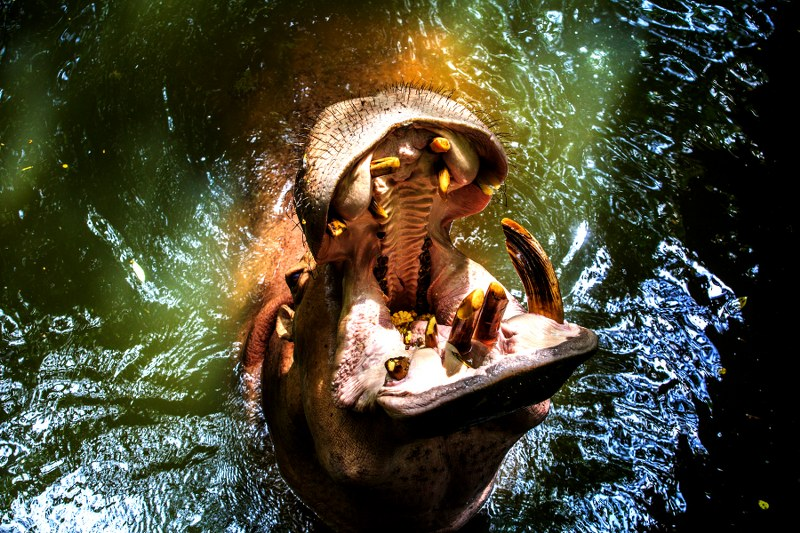

สัตว์ที่ชอบ
ฮิปโปโปเตมัส/Hippopotamus
เป็นสัตว์ที่มีรูปร่างกลมใหญ่ และมีปากกว้างมาก เขี้ยวล่างยาวโค้งเป็นอาวุธสำคัญประจำตัว สังกตเห็นเส้นขนได้บริเวณรอบปาก และใกล้กับปลายหาง ส่วนลำตัวเมื่อมองดูแล้วคล้ายกับไม่มีขน แต่ที่จริงแล้วลำตัวของฮิปโปโปเตมัส มีขนเส้นที่เล็กมาก ๆ และกระจายอยู่ห่าง ๆ กัน หนังหนามีต่อมเมือก ต่อมใต้ผิวหนังจะผลิตเมือกเหลวออกมา เมื่อโดนแสงแดดจะค่อย ๆ กลายเป็นสีแดงอ่อนคล้ายเลือด มีประโยชน์เพื่อป้องกันอันตรายจากแสงแดดและป้องกันการติดเชื้อ พบในทวีปแอฟริกา ทางด้านตะวันตก ตะวันออก และทางใต้ ของทวีป อยู่รวมกันเป็นฝูง ปกติอาศัยอยู่ในน้ำตามบริเวณน้ำนิ่งหรือน้ำไหลเอื่อย ๆ ในช่วงเวลากลางวัน และขึ้นบกมาหากินตอนกลางคืน ปกติไม่ดุ แต่ในช่วงผสมพันธุ์ตัวผู้จะต่อสู้กันอย่างดุร้าย จะดุเวลาตกใจหรือได้รับบาดเจ็บ และแม่ลูกอ่อนจะดุมาก ดำน้ำเก่ง สามารถเดินท่องอยู่ใต้น้ำได้
โคอาล่า/Koala

ขนมีสีเทาถึงน้ำตาลปนเหลือง และมีสีขาวบริเวณคาง หน้าอก ด้านหน้าของแขนและขา ขนบริเวณหูมีลักษณะเป็นปุย และมีขนสีขาวที่ยาวกว่าบริเวณอื่น ตัวเมียจะมีกระเป๋าหน้าท้องเหมือนจิงโจ้ ตัวผู้จะมีต่อมกลิ่นสีน้ำตาลแถบสีขาวตรงหน้าอก โดยปกติโคอาล่าเคลื่อนไหวช้า ใช้เวลานอนถึง 16–24 ชั่วโมงต่อวัน เพื่อรักษาพลังงานไว้
นกกระจอกเทศ/Common Ostrich
นกตัวผู้มีขนาดโตกว่าตัวเมียมาก ตัวผู้เมื่อโตเต็มวัยขนตามลำตัวจะเปลี่ยนไปเป็นสีดำ ส่วนขนปีกและขนหางจะเป็นสีขาวสวยงามมาก สำหรับตัวเมียจะมีขนตามตัวสีน้ำตาลเทาอ่อน ปากมีลักษณะแบนและกว้างมาก ดวงตากลมโต หัวเล็ก ศีรษะล้าน มีขนอ่อนบางสีเทา น้ำตาลอ่อนคล้ายสีครีมหรือผลมะอึก คอยาวและมีขนอ่อนเช่นเดียวกับหัว ปีกเล็กไม่สมตัว ขนที่ปีกยาวพอสมควรแต่ก็ไม่ใช่ขนสำหรับการบิน ซึ่งขนปีกมีไว้เพื่อความสวยงามเท่านั้น ขาและโคนขาเป็นขาเกลี้ยง ๆ ไม่มีขน นกตัวผู้มีลำคอหย่อนยานกว่าตัวเมีย ลักษณะเท้าของนกกระจอกเทศจะพบว่ามีนิ้วเท้าข้างละ 2 นิ้ว ใต้นิ้วเป็นเนื้ออ่อน ๆ ปลายนิ้วทู่ ๆ ใหญ่ ๆ นิ้วทั้งสองจัดเป็นนิ้วกลางและนิ้วนางเท่านั้น นิ้วที่ใหญ่มากคือนิ้วกลาง ซึ่งเป็นธรรมชาติของสัตว์โลกอย่างหนึ่งคือ สัตว์ที่ไม่ใช้ความเร็วของฝีเท้าจะมีนิ้วครบชุดมือ – เท้าข้างละ 5 นิ้ว หากสัตว์นั้นต้องการความเร็วของฝีเท้าเพื่อวิ่งหนีศัตรู ธรรมชาติก็จะวิวัฒนาการให้นิ้วหายไปทีละนิ้วสองนิ้วจนเหลือแต่เพียงนิ้วเดียว เช่นเท้าของม้า มีเพียงนิ้วเดียวที่เรียกว่ากีบเท้าม้า ขนาดโตเต็มที่สูงประมาณ 2 – 2.5 เมตร น้ำหนักเมื่อโตเต็มที่จะหนักประมาณ 160 กิโลกรัม มีอายุยืนได้ถึง 65 – 75 ปี หัวเล็ก คอยาว ตาโต ขนตายาว มีขาใหญ่แข็งแรง บินไม่ได้แต่วิ่งได้เร็ว ลูกนกอายุเพียง 2-3 วันก็จะวิ่งได้แล้ว
ยีราฟ/Giraffe
เป็นสัตว์บกที่สูงที่สุด มีคอยาวมาก มีเขาทั้งในตัวผู้และตัวเมีย ไม่ผลัดเขา เขามีขนปกคลุมอยู่ หนังมีขนสั้นสีน้ำตาล มีลายขาวแปลกตา ปากและลิ้นยาว ใช้ริมฝีปาก และลิ้นม้วนวนจับใบไม้ได้ มีเต้านม 4 เต้า ยีราฟจะเล็มใบไม้จากกิ่งไม้ในระดับสูงของต้นไม้ โดยเฉพาะใบไม้ตระกูลอาแคเซีย ซึ่งใบไม้จะมีแคลเซี่ยมและโปรตีนที่เหมาะกับการอัตราการเจริญเติบโตของยีราฟ โดยในหนึ่งวันยีราฟกินใบไม้เฉลี่ย 34 กิโลกรัม ซึ่งเป็นปริมาณที่น้อยเมื่อเทียบกับน้ำหนักตัว เนื่องจากใบไม้เป็นพืชอาหารที่มีคูณภาพ และระบบทางเดินอาหารของยีราฟเป็นระบบที่มีประสิทธิภาพ คือเป็นสัตว์กินพืชที่อยู่ในกลุ่มที่มีการขย้อนอาหารที่ย่อยแล้วบางส่วนออกมาเคี้ยวซ้ำ ( สัตว์เคี้ยวเอื้อง )และกระเพาะอาหารแบ่งออกเป็น 4 ส่วนเพื่อช่วยในการย่อยพืชอาหาร